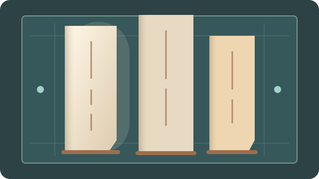
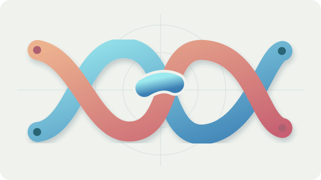
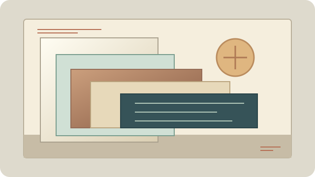
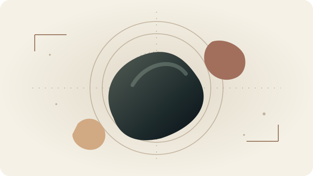

FX-106 · Vertical cover
Notes / volume 01
让标题成为页面中的独立空间坐标。此处的文本可被选择。
六套原创独立 CSS/HTML 排版素材与四幅 SVG 图形。该页仅验证源码结构与语义示例；不加载外部字体，不宣称浏览器兼容和视觉生产验收。字体选择由宿主系统决定。
让标题成为页面中的独立空间坐标。此处的文本可被选择。
雨上がりの東京を歩く。
记录山海之间的声音。
浏览器原生 ruby / rt；不是拼音转换程序或语言教学服务。言葉の間にある余白は、意味のない場所ではない。「読む」という動作に、静かなリズムをつくる。
有些内容不需要更大的声音，只需要更清楚的层次。



